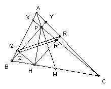

ABC is an acute-angled triangle. M is the midpoint of BC and P is the point on AM such that MB = MP. H is the foot of the perpendicular from P to BC. The lines through H perpendicular to PB, PC meet AB, AC respectively at Q, R. Show that BC is tangent to the circle through Q, H, R at H.
Solution

Let HQ meet PB at Q' and HR meet PC at R'. MP = MB = MC, so angle BPC = 90o. So three angles of PR'HQ' are 90o, so it is a rectangle. So PH is a diameter of the circle through P, R', H, Q'. It is perpendicular to BC, so BC is tangent to the circle. It is sufficient to show that QR is parallel to Q'R'.
Let CP meet AB at X, and BP meet AC at Y. Since P is on the median, it follows that XY is parallel to BC. (For example, it follows immediately from Ceva that AX/XB = AY/YC.) So PY/BP = PX/CP. Since HQ is parallel to CX, we have QQ'/HQ' = PX/CP, and since BY is parallel to HR we have RR'/HR' = PY/BP. Hence QQ'/HQ' = RR'/HR', so QR is parallel to Q'R' as required.

© John Scholes
jscholes@kalva.demon.co.uk
1 Jan 2003
Last corrected/updated 1 Jan 03